Directory · 373 people
People
Speakers, artists, curators, performers and organizers across the week's programs, as each program lists them. Every name opens a page with their sessions, works and sources.
Showing 373 of 373 people
 0H10M1keNew York, NYArtist · 1 event · 1 work1001 ColorsCincinnati, OHArtist · 1 work1876Performer · 1 event577 StudioLos Angeles, CAArtistAaron BradleyDirector + Associate Professor, The Foresight Lab @ University of CincinnatiSpeaker · 1 session
0H10M1keNew York, NYArtist · 1 event · 1 work1001 ColorsCincinnati, OHArtist · 1 work1876Performer · 1 event577 StudioLos Angeles, CAArtistAaron BradleyDirector + Associate Professor, The Foresight Lab @ University of CincinnatiSpeaker · 1 session Aaron SechristOK PantsSpeaker · Artist · 2 events
Aaron SechristOK PantsSpeaker · Artist · 2 events Abby GrimmDirector of Engagement & Experience, CintrifuseSpeaker · 3 sessionsAdam BiancoFounder & Chief Strategist, Offtrail MarketingSpeaker · 1 sessionAdam TuckerChief Product & Technology Officer, WaysideSpeaker · 1 session
Abby GrimmDirector of Engagement & Experience, CintrifuseSpeaker · 3 sessionsAdam BiancoFounder & Chief Strategist, Offtrail MarketingSpeaker · 1 sessionAdam TuckerChief Product & Technology Officer, WaysideSpeaker · 1 session AérosculptureFranceArtist · 1 work
AérosculptureFranceArtist · 1 work Aftab PurevalMayor, City of CincinnatiSpeaker · 1 sessionAlex SampsonSpecial guest, Freya Skye: Stars Align TourPerformer · 1 eventAlex YocumCo-Owner, Swirley's Soft ServeSpeaker · 2 sessionsAlex ZyndorfDirector of Commercial Real Estate, Model GroupSpeaker · 1 sessionAli CrowdusFounder, Consultant, The People's KitchenSpeaker · 1 sessionAllison SchroederFounder, Pomme CommunicationsSpeaker · 1 sessionAllyson WestExecutive Director/Founder, CindependentSpeaker · 1 sessionAmelia WaresFounder, TissuTrakSpeaker · 1 sessionAmy VaughanCEO / Managing Director, Together Digital / The Marketer CollaborativeSpeaker · 1 session
Aftab PurevalMayor, City of CincinnatiSpeaker · 1 sessionAlex SampsonSpecial guest, Freya Skye: Stars Align TourPerformer · 1 eventAlex YocumCo-Owner, Swirley's Soft ServeSpeaker · 2 sessionsAlex ZyndorfDirector of Commercial Real Estate, Model GroupSpeaker · 1 sessionAli CrowdusFounder, Consultant, The People's KitchenSpeaker · 1 sessionAllison SchroederFounder, Pomme CommunicationsSpeaker · 1 sessionAllyson WestExecutive Director/Founder, CindependentSpeaker · 1 sessionAmelia WaresFounder, TissuTrakSpeaker · 1 sessionAmy VaughanCEO / Managing Director, Together Digital / The Marketer CollaborativeSpeaker · 1 session Ana TomashviliGeorgiaArtist · 1 workAndrew CaprarielloSenior Consultant, Wave Strategy LLCSpeaker · 1 sessionAndrew DeyeCFO, JobsOhioSpeaker · 1 sessionAndrew SalzbrunManaging Partner, AGAR; co-creator of BLINK, AGAROrganizer · FounderAniruddhan RameshStudent Advisor, Bearcat Ventures - University of CincinnatiSpeaker · 1 sessionAnn MooneyExecutive Director, Xavier University - Sedler Xavier Center for Experiential Learning in BusinessSpeaker · 1 sessionAnn ThompsonCoach, Author, Speaker, The Ann Thompson CompanySpeaker · 1 sessionAnne Delano SteinertAssistant Professor in the Department of History at the University of CincinnatiCurator · 2 eventsAnthony JenkinsGallery Director AssistantCurator · 1 eventAntony SeppiVP, Alloy Growth Lab/Alloy DevelopmentSpeaker · 3 sessionsArabeth BalaskoCurator of Photographs, Prints & MediaCurator · 1 eventArt Academy of CincinnatiCincinnatiArtistArya GargResearcher, applied foresight, The Foresight LabSpeaker · 1 sessionAsha AMACincinnati + New YorkArtist · 1 workAsianatiCincinnatiArtist · 4 events · 1 workAu Lac Lion Dance AssociationDayton, OhioPerformer · 1 eventAustin ZaniLead Engineer, Pay TheorySpeaker · 2 sessionsBailey ElderLudlow, KentuckyArtist · 1 workBarbara HauserCommunity Advocate, Barbara HauserSpeaker · 1 sessionBatres GilvinArtist collaborative (Karla Batres and Bradly Gilvin)Artist · 1 event
Ana TomashviliGeorgiaArtist · 1 workAndrew CaprarielloSenior Consultant, Wave Strategy LLCSpeaker · 1 sessionAndrew DeyeCFO, JobsOhioSpeaker · 1 sessionAndrew SalzbrunManaging Partner, AGAR; co-creator of BLINK, AGAROrganizer · FounderAniruddhan RameshStudent Advisor, Bearcat Ventures - University of CincinnatiSpeaker · 1 sessionAnn MooneyExecutive Director, Xavier University - Sedler Xavier Center for Experiential Learning in BusinessSpeaker · 1 sessionAnn ThompsonCoach, Author, Speaker, The Ann Thompson CompanySpeaker · 1 sessionAnne Delano SteinertAssistant Professor in the Department of History at the University of CincinnatiCurator · 2 eventsAnthony JenkinsGallery Director AssistantCurator · 1 eventAntony SeppiVP, Alloy Growth Lab/Alloy DevelopmentSpeaker · 3 sessionsArabeth BalaskoCurator of Photographs, Prints & MediaCurator · 1 eventArt Academy of CincinnatiCincinnatiArtistArya GargResearcher, applied foresight, The Foresight LabSpeaker · 1 sessionAsha AMACincinnati + New YorkArtist · 1 workAsianatiCincinnatiArtist · 4 events · 1 workAu Lac Lion Dance AssociationDayton, OhioPerformer · 1 eventAustin ZaniLead Engineer, Pay TheorySpeaker · 2 sessionsBailey ElderLudlow, KentuckyArtist · 1 workBarbara HauserCommunity Advocate, Barbara HauserSpeaker · 1 sessionBatres GilvinArtist collaborative (Karla Batres and Bradly Gilvin)Artist · 1 event BeamhackerAustraliaArtist · 1 workBen WolberFounder & CEO, IllumeSpeaker · 1 sessionBethani BlakeExecutive Gallery DirectorCurator · 1 eventBethany GeorgeOwner/Founder, The Sales MystiqueSpeaker · 1 sessionBetty PolingDirector of Food Innovation, Corporation for Findlay MarketSpeaker · 1 session
BeamhackerAustraliaArtist · 1 workBen WolberFounder & CEO, IllumeSpeaker · 1 sessionBethani BlakeExecutive Gallery DirectorCurator · 1 eventBethany GeorgeOwner/Founder, The Sales MystiqueSpeaker · 1 sessionBetty PolingDirector of Food Innovation, Corporation for Findlay MarketSpeaker · 1 session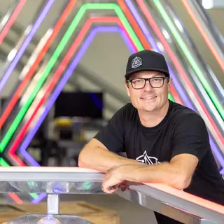
Big ArtCanadaArtist · 1 work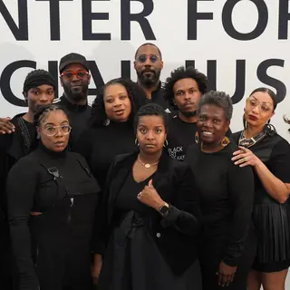
Black Art SpeaksCincinnati, Ohio United StatesArtist · 1 workBrad WilliamsComedian, The Tall Tales TourPerformer · 1 event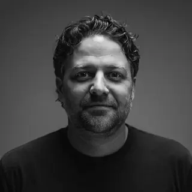
Brad WiseFounder, Wolf House FablesSpeaker · 1 sessionBrendon CullPresident and CEO, Cincinnati Regional ChamberSpeaker · 1 sessionBrett BoltonLas Vegas, NV United StatesArtist · 1 workBrett JewellCo-Founder & COO, Another NineSpeaker · 1 sessionBrian DuerringChief Operating Officer, Pantomath Inc.Speaker · 1 sessionBrian GrimbergCEO, Dory PowerSpeaker · 1 sessionBroder SchmidtFounder & CEO, AthanexSpeaker · 1 sessionBryan McClearyExecutive-in-Residence and communications advisor, CincyTechSpeaker · 1 sessionCalcagno CullenIndependent CuratorCurator · 2 eventsCalvin DavisDonor Engagement Manager, Cincinnati Art Museum/Cincinnati Young Black ProfessionalsSpeaker · 1 sessionCandida CrastoFounder, Executive Director, The AFFECT ProjectSpeaker · 1 sessionCandra ReevesCommunity Impact Advisor (Creative Collaborator), Meaningful ConnectionsOrganizer Carmen WinantArtist and Roy Lichtenstein Chair of Studio Art at the Ohio State UniversitySpeaker · Artist · 2 eventsCasey SpragueFounder, SpectC Technologies Inc.Speaker · 1 session
Carmen WinantArtist and Roy Lichtenstein Chair of Studio Art at the Ohio State UniversitySpeaker · Artist · 2 eventsCasey SpragueFounder, SpectC Technologies Inc.Speaker · 1 session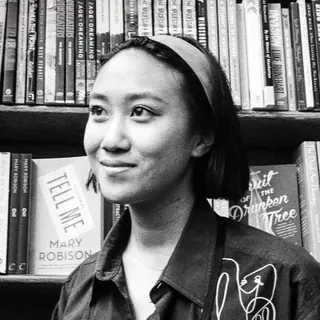
Catherine JueCo-Founder, KernelSpeaker · 1 sessionCatherine LentzDirector of Lending, Southern Ohio, ECDISpeaker · 1 sessionCathy MayhughDirector of ExhibitionsCurator · 1 eventCeCe WinansHeadliner, COME WORSHIP! TourPerformer · 1 event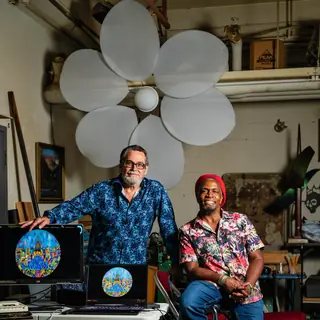
Cedric Michael Cox & Studio 181 Brent KeltchCincinnatiArtist · 1 workCharity GayleSpecial guest, COME WORSHIP! TourPerformer · 1 eventChas WiederholdArchitect, Studio AusgangArtist · 1 workChase DawsonCo-Owner, Swirley's Soft ServeSpeaker · 2 sessions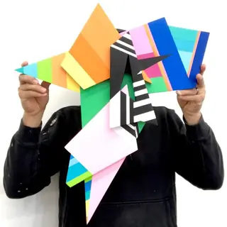
Chase MelendezCovington, KYArtist · 1 work Chaske HaverkosCincinnati, Ohio United StatesArtist · 2 worksChris BergmanFounder/CEO, Gylee GamesSpeaker · 1 session
Chaske HaverkosCincinnati, Ohio United StatesArtist · 2 worksChris BergmanFounder/CEO, Gylee GamesSpeaker · 1 session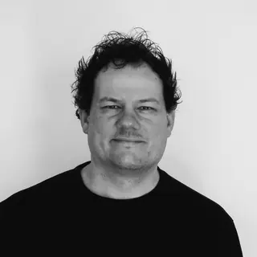
Chris RitterIndependent Creative Director, Christopher A. Ritter Art Direction, Branding & DesignSpeaker · 1 sessionChristian Reichle & Squid KohutReno, NVArtistChristin GodaleExecutive Director, LifeSciKYSpeaker · 3 sessionsChristina MossManaging Partner/Founder, MossFinancialsSpeaker · 1 sessionChristine JankowskiArchivistCurator · 2 events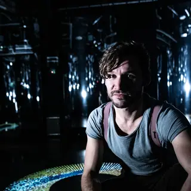
Christo Squier & Thomas BlackburnEnglandArtist · 1 workChristy JohnsonGP, Fireroad VenturesSpeaker · 2 sessionsChuck MobleyChief Architect, PantomathSpeaker · 1 sessionCincinnati Dayton TaikoPerformer · 2 eventsCincinnati Skatepark ProjectCincinnati, OHArtistColumbus college of art and designColumbusArtistCourtney CarrollLicensed Professional Clinical Counselor Supervisor, Called 2 Encourage Counseling and Self DevelopmentSpeaker · 1 sessionCristian MăcelaruconductorPerformer · 3 eventsCustom Fibre Optics LtdEnglandArtist · 1 workDahlia BaerStudent CuratorCurator · 1 event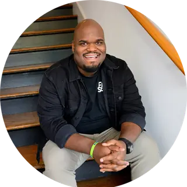
Damian GreyOwner, FilmStorySpeaker · 1 session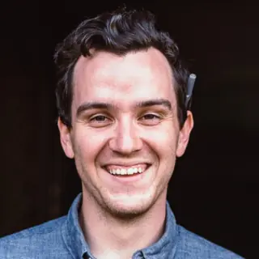
Dan BrownChief Services Officer, JumpStartSpeaker · 1 session Daniel ImmerwahrBergen Evans Professor in the Humanities at Northwestern UniversitySpeaker · 2 events
Daniel ImmerwahrBergen Evans Professor in the Humanities at Northwestern UniversitySpeaker · 2 events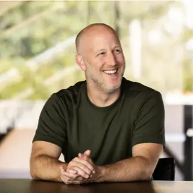
Daniel LevinePartner, AccelSpeaker · 1 sessionDaniel RossaGermanyArtist · 1 work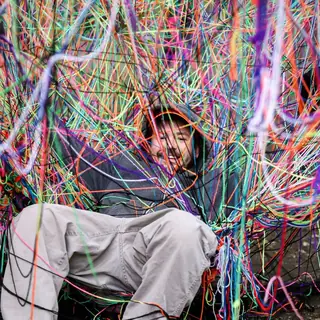
Daniel ShieldsCincinnati, OHArtist · 1 workDarrin MurrinerCEO, CloverleafSpeaker · 1 sessionDave HuttenEntrepreneur in Residence, Cincinnati Children'sSpeaker · 1 sessionDave TheusEntrepreneur in Residence, Cincinnati Children'sSpeaker · 1 sessionDavid UhlenhakeDirector of the Paul J. Hooker Center for Entrepreneurial Leadership, Bowling Green State UniversitySpeaker · 1 sessionDavid WysongActor, Coworking microseriesSpeaker · 1 session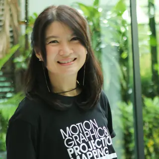
DecideKitWangthonglang, Bangkok ThailandArtist · 1 workDenise DunlapManaging Partner, Sage Growth CapitalSpeaker · 1 sessionDestinee ThomasCo-Founder & Creative Director (Cincinnati Art Week); Co-Founder & Principal, Cincy Nice, Cincy NiceFounder · OrganizerDiana TisueIndependent CuratorCurator · 1 eventDL HughleyComedian and radio host; DL + DL ‘Anything Goes’ tourPerformer · 1 eventDon LemonJournalist; DL + DL ‘Anything Goes’ tourPerformer · 1 eventDora ChengFounder, Yee MamaSpeaker · 1 sessionDoug HardestyFounder & Principal, Hardesty Operating GroupSpeaker · 1 session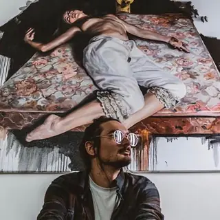
Drew MerrittNMArtist · 1 workDulkValencia, SpainArtist · 1 workDuo ShenconductorPerformer · 1 eventEd DixonFounderCurator · 1 event Elijah HowePhotographerSpeaker · Artist · 2 events
Elijah HowePhotographerSpeaker · Artist · 2 events Elizabeth LeitzellPhotographer and Short FilmmakerSpeaker · Artist · 2 eventsElla LipnikIndependent CuratorCurator · 1 eventEllen PriceOCAC Board Member & Art Exhibitions MemberCurator · 1 eventElléna LourensNew York, NYArtist · 1 workEmerson ForresterCurator · 1 eventEmily WiethornAssistant Professor of Art & DesignCurator · Artist · 3 eventsEmma BartonOperations Director & Producer, Riversky FilmsSpeaker · 1 sessionEmma OffPresident & CEO, CincyTechSpeaker · 1 session
Elizabeth LeitzellPhotographer and Short FilmmakerSpeaker · Artist · 2 eventsElla LipnikIndependent CuratorCurator · 1 eventEllen PriceOCAC Board Member & Art Exhibitions MemberCurator · 1 eventElléna LourensNew York, NYArtist · 1 workEmerson ForresterCurator · 1 eventEmily WiethornAssistant Professor of Art & DesignCurator · Artist · 3 eventsEmma BartonOperations Director & Producer, Riversky FilmsSpeaker · 1 sessionEmma OffPresident & CEO, CincyTechSpeaker · 1 session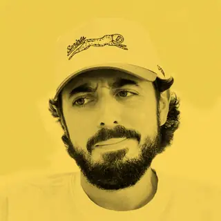
Eric RoseFounder & CEO, Sprints IncSpeaker · 1 session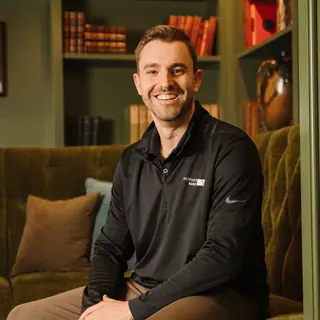
Ethan GrobCo-Founder & CEO, Another NineSpeaker · 1 sessionEvan HinespianoPerformer · 1 eventEvan VerrilliCreative Direction (Creative Collaborator); website design, Evan Verrilli StudioOrganizer · Artist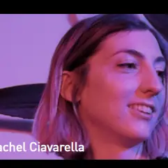
Everything Good StudioArtist · 1 work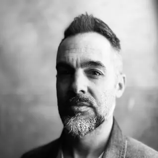
Felix FrankGermanyArtist · 1 workFifth Third DesignCincinnati, OHArtist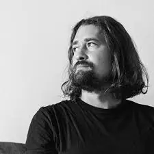
Filip RocaBarcelona, Catalonia SpainArtist · 1 workFreddy MacOn Air Talent, CoWorking Microseries/Q102Speaker · 1 sessionFreya SkyeSinger, Stars Align TourPerformer · 1 event Gee HortonGee Horton StudiosArtist · 1 workGERA 1GreeceArtist · 1 workGrayson StalveyFounder, Aegis Runway SystemsSpeaker · 1 sessionGreg D’AmicoCincinnati, OHArtist · 1 work
Gee HortonGee Horton StudiosArtist · 1 workGERA 1GreeceArtist · 1 workGrayson StalveyFounder, Aegis Runway SystemsSpeaker · 1 sessionGreg D’AmicoCincinnati, OHArtist · 1 work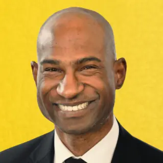
Greg PipkinsOperating Member, VP of sales, FoundHouseSpeaker · 1 sessionGuy PersaudPresident of Habitat Care, P&GSpeaker · 1 sessionHeather JonesCurator and Director of Programs and EngagementCurator · 2 events Heesoo KwonArtistSpeaker · Artist · 3 eventsHolly BowlingSolo pianistPerformer · 1 eventHolly Doan SpraulDirectorCurator · 1 eventHolly ManiattyAccessibility Director, ALL IN EVENTSOrganizerHolly ShoemakerDirector of Brand Strategy, Mertz Design StudioSpeaker · 1 sessionIlana HabibPrincipal, Cintrifuse CapitalSpeaker · 2 sessions
Heesoo KwonArtistSpeaker · Artist · 3 eventsHolly BowlingSolo pianistPerformer · 1 eventHolly Doan SpraulDirectorCurator · 1 eventHolly ManiattyAccessibility Director, ALL IN EVENTSOrganizerHolly ShoemakerDirector of Brand Strategy, Mertz Design StudioSpeaker · 1 sessionIlana HabibPrincipal, Cintrifuse CapitalSpeaker · 2 sessions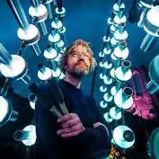
illumaphoniumEnglandArtist · 1 work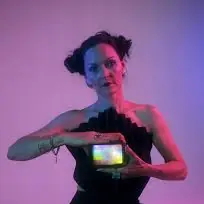
Inka KendziaSouth AfricaArtist · 1 workJ.B. KroppCEO / Managing Director, Cintrifuse / Cintrifuse CapitalSpeaker · 2 sessionsJack WalterProgrammer, University of Cincinnati College-Conservatory of Music (CCM), Lighting Design and TechnologyArtist · 1 workJackie ReauCEO, Game DaySpeaker · 1 sessionJacob KaplanLighting designer, University of Cincinnati College-Conservatory of Music (CCM), Lighting Design and TechnologyArtist · 1 workJaimin GandhiCo-founder and Chief Technology Officer, Redi HealthSpeaker · 1 session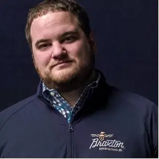
Jake RouseCo-Founder & CEO, Braxton BrewingSpeaker · 1 sessionJake SmierciakCo-founder, WaysideSpeaker · 1 session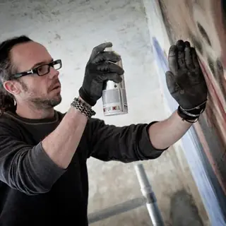
James BulloughBerlinArtist · 1 workJamie Schorsch2026 Ohio Art Educator of the YearSpeaker · 1 eventJane Alden StevensProfessor EmeritaCurator · 1 eventJasmine HughesDirector of Marketing & Development, Aviatra AcceleratorsSpeaker · 3 sessionsJason E. ShaimanCurator of Exhibitions at the Richard and Carole Cocks Art Museum, Miami UniversityCurator · 1 eventJason FrenchCurator of CollectionsCurator · 1 event Jason SnellArtist Programming Advisor (Creative Collaborator), SnellBeastHost · Speaker · 2 events · 1 work
Jason SnellArtist Programming Advisor (Creative Collaborator), SnellBeastHost · Speaker · 2 events · 1 work Javarri LewisCuratorial Advisor (Creative Collaborator)Curator · Speaker · 2 eventsJay Hill & RobertoPerformer · 1 eventJazz at Lincoln Center OrchestraPerformer · 2 eventsJeff HarrisChef, Owner, Nolia KitchenSpeaker · 1 sessionJenie GaoExecutive Director of Centre A: Vancouver International Centre for Contemporary Asian ArtCurator · 1 eventJennifer Glanville LoveBrewer, Director of Partnerships, Boston Beer CompanySpeaker · 2 sessions
Javarri LewisCuratorial Advisor (Creative Collaborator)Curator · Speaker · 2 eventsJay Hill & RobertoPerformer · 1 eventJazz at Lincoln Center OrchestraPerformer · 2 eventsJeff HarrisChef, Owner, Nolia KitchenSpeaker · 1 sessionJenie GaoExecutive Director of Centre A: Vancouver International Centre for Contemporary Asian ArtCurator · 1 eventJennifer Glanville LoveBrewer, Director of Partnerships, Boston Beer CompanySpeaker · 2 sessions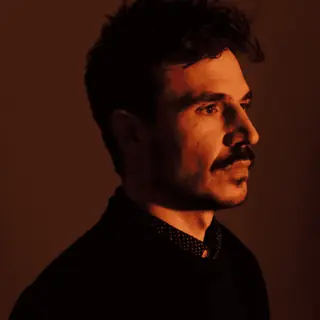
Jérémie BellotFranceArtist · 1 workjeremy jarrettPresident & CEO, Kinetic VisionSpeaker · 1 sessionJérémy OuryFranceArtist · 1 workJill MorenzPresident, Aviatra AcceleratorsSpeaker · 3 sessionsJim Tucker and Frank YoungCincinnati, OHArtist · 1 workJimmy SauterGrowth and Partnerships Manager, Pay TheorySpeaker · 1 sessionJoe Kuncheria PanjikaranForesight Researcher, NEXT Innovation Scholars, University of CincinnatiSpeaker · 1 sessionJoe RohanDirector of Startup Programs, BRITE Energy InnovatorsSpeaker · 1 session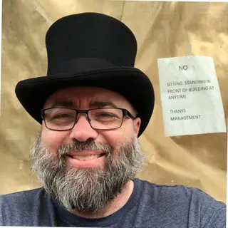
John BentleyFractional CTO, Product Journey Group LLCSpeaker · 1 session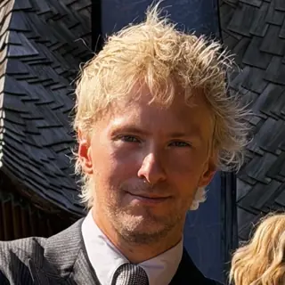
John Hurleyleads marketing, NotionSpeaker · 3 sessionsJohn Paul McGeepianoPerformer · 1 eventJohn YukselCo-Founder & CEO, Beltways, Inc.Speaker · 1 sessionJohn-David RichardsonAnnualized Adjunct InstructorArtist · Curator · 2 eventsJon ThompsonFounder/Writer/Director, CoworkingSpeaker · 1 sessionJonas DenzelGermanyArtist · 1 workJordan TateProfessor of ArtCurator · 1 eventJordanne RennerMultidisciplinary ArtistSpeaker · Artist · 2 eventsJordon KuhnLaunch Program Manager, Findlay MarketSpeaker · 1 sessionJorge Rodríguez DiezExecutive Director and Chief CuratorCurator · 1 eventJoseph VitonePhotographerSpeaker · Artist · 2 events Joshua BergArtistSpeaker · Artist · 4 eventsJoshua MhoonpianoPerformer · 1 eventJP Jackson + Brian HavenerNashville, Tennessee United StatesArtist · 1 workJuan FuentesMadridArtist · 1 workJulia DeweyChief Partnerships Officer, Rev1 VenturesSpeaker · 1 sessionJulie MesserSr. Manager of Consumer Insights, Boston Beer CoSpeaker · 1 sessionJulie Renée JonesArtistSpeaker · Artist · 2 eventsJulieta GonzálezHead of Visual ArtsCurator · 1 eventJulio AcostaCurator · 1 eventJustin BohCincinnatiArtist · 1 workKailah WareCreative Director / Founder, SunnyBlu Creative AgencySpeaker · 1 sessionKameron SeabrookTech founder, ObaiSpeaker · 1 sessionKara WillisProgram Manager, Miami UniversitySpeaker · 2 sessionsKareem SimpsonCuratorial ambassador, Sparklight Creative GroupCuratorKasumi Art StudiosCleveland, OHArtist · 1 workKate BonansingaDirector of the School of ArtCurator · 1 eventKathy Wadejazz vocalist, 1988 (former Duncanson Artist-in-Residence)Performer · 1 event
Joshua BergArtistSpeaker · Artist · 4 eventsJoshua MhoonpianoPerformer · 1 eventJP Jackson + Brian HavenerNashville, Tennessee United StatesArtist · 1 workJuan FuentesMadridArtist · 1 workJulia DeweyChief Partnerships Officer, Rev1 VenturesSpeaker · 1 sessionJulie MesserSr. Manager of Consumer Insights, Boston Beer CoSpeaker · 1 sessionJulie Renée JonesArtistSpeaker · Artist · 2 eventsJulieta GonzálezHead of Visual ArtsCurator · 1 eventJulio AcostaCurator · 1 eventJustin BohCincinnatiArtist · 1 workKailah WareCreative Director / Founder, SunnyBlu Creative AgencySpeaker · 1 sessionKameron SeabrookTech founder, ObaiSpeaker · 1 sessionKara WillisProgram Manager, Miami UniversitySpeaker · 2 sessionsKareem SimpsonCuratorial ambassador, Sparklight Creative GroupCuratorKasumi Art StudiosCleveland, OHArtist · 1 workKate BonansingaDirector of the School of ArtCurator · 1 eventKathy Wadejazz vocalist, 1988 (former Duncanson Artist-in-Residence)Performer · 1 event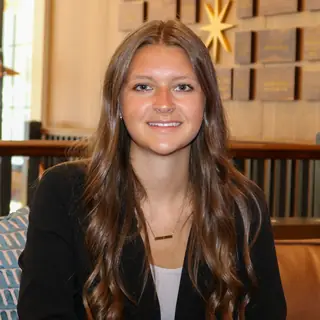
Katie StratmanStudent Venture Analyst, Norse VenturesSpeaker · 2 sessionsKatie ThompsonSr. Analyst/Program Manager, GotaraSpeaker · 1 sessionKaty Guillen & The DriveSupport act, Robin TrowerPerformer · 1 eventKe Jyun WuLos Angeles, CAArtist · 1 work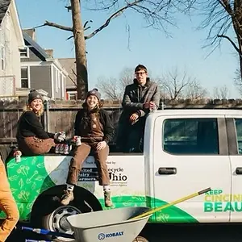
Keep Cincinnati BeautifulCincinnati, OHIO United StatesArtist · 1 workKelly DolanEntrepreneur in Residence, Miami UniversitySpeaker · 1 sessionKelly KucharczykPrincipal Consultant, Project MedtechSpeaker · 1 sessionKelly ShawAssociate Director, Findlay KitchenSpeaker · 1 sessionKelsey NolinIndependent CuratorCurator · 1 event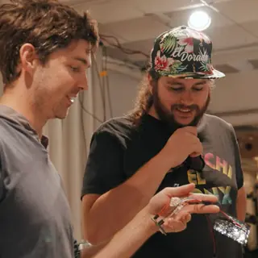
Kemper Sauce StudiosCincinnati, OH United StatesArtist · 1 workKerry TaftFounder, Taft SystemsSpeaker · 1 session Kevin MooreArtistic Director and Curator, FotoFocusCurator · Organizer · 1 eventKia S. SmithArtistic Director, South Chicago Dance TheatrePerformer · 1 eventKimm LauterbachPresident & CEO, REDI CincinnatiSpeaker · 1 sessionKip EagenIndependent CuratorCurator · 1 event
Kevin MooreArtistic Director and Curator, FotoFocusCurator · Organizer · 1 eventKia S. SmithArtistic Director, South Chicago Dance TheatrePerformer · 1 eventKimm LauterbachPresident & CEO, REDI CincinnatiSpeaker · 1 sessionKip EagenIndependent CuratorCurator · 1 event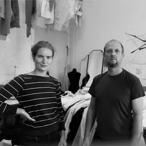
Koros Design StudioHungaryArtist · 1 work Kristen GaylordHerzfeld Curator of Photography and Media Arts at the Milwaukee Art MuseumSpeaker · Curator · 2 eventsKristin SievePresident, Mertz Design StudioSpeaker · 1 sessionKyle Eli EbersoleCincinnati, OHArtist · 2 worksLaurkita SheffieldCFO and Small Business Empowerment Educator, Sheffield Accounting and Financial ServicesSpeaker · 1 sessionLawrence Malott - FOREALISMNorthern KentuckyArtist · 1 workLekha ChallappaFounder/CTO, AuratSpeaker · 1 session
Kristen GaylordHerzfeld Curator of Photography and Media Arts at the Milwaukee Art MuseumSpeaker · Curator · 2 eventsKristin SievePresident, Mertz Design StudioSpeaker · 1 sessionKyle Eli EbersoleCincinnati, OHArtist · 2 worksLaurkita SheffieldCFO and Small Business Empowerment Educator, Sheffield Accounting and Financial ServicesSpeaker · 1 sessionLawrence Malott - FOREALISMNorthern KentuckyArtist · 1 workLekha ChallappaFounder/CTO, AuratSpeaker · 1 session LeMonde StudioAustin, TXArtist · 3 worksLeonard HarmonArtist · Curator · 3 eventsLeslie EpszteinFranceArtist · 1 work
LeMonde StudioAustin, TXArtist · 3 worksLeonard HarmonArtist · Curator · 3 eventsLeslie EpszteinFranceArtist · 1 work Leslie MooneyVice President and Executive Director, BLINK, Cincinnati Regional ChamberOrganizerLia LubinskyAssistant designer, University of Cincinnati College-Conservatory of Music (CCM), Lighting Design and TechnologyArtist · 1 work
Leslie MooneyVice President and Executive Director, BLINK, Cincinnati Regional ChamberOrganizerLia LubinskyAssistant designer, University of Cincinnati College-Conservatory of Music (CCM), Lighting Design and TechnologyArtist · 1 work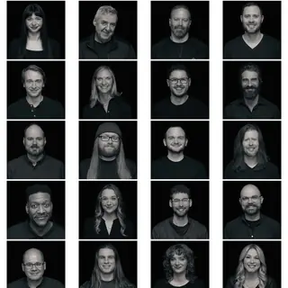
LightborneCincinnati, Oh United StatesArtistLila UngsArtist · Curator · 2 events Lindsay AlbertProgram Manager, KADISTSpeaker · Curator · 3 eventsLindsay Glatz + William NemitoffLAArtist · 1 workLindsay Karas StencelNew Ventures Partner, Thompson Hine LLPSpeaker · 1 sessionLiv CassinelliCincinnati, OHArtist · 1 workLo Cash NinasPerformer · 1 eventLooking Up ArtsSan Francisco, CAArtist · 1 work
Lindsay AlbertProgram Manager, KADISTSpeaker · Curator · 3 eventsLindsay Glatz + William NemitoffLAArtist · 1 workLindsay Karas StencelNew Ventures Partner, Thompson Hine LLPSpeaker · 1 sessionLiv CassinelliCincinnati, OHArtist · 1 workLo Cash NinasPerformer · 1 eventLooking Up ArtsSan Francisco, CAArtist · 1 work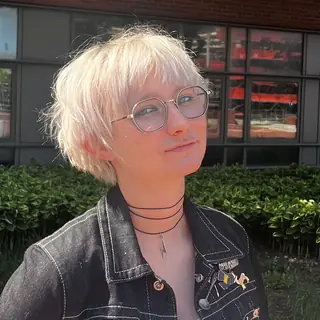
Lucy DunnAssistant designer, University of Cincinnati College-Conservatory of Music (CCM), Lighting Design and TechnologyArtist · 1 workLynn WhitneyAssociate Professor EmeritusSpeaker · Artist · 2 eventsMallory FeltzDirector of Exhibitions and Public ArtCurator · 1 eventMambi MorrisCurator · 1 eventMarc PhelpsNorthern KentuckyArtistMarc PretoriusStrategic Account Executive, DatabricksSpeaker · 1 sessionMaria Seda-ReederExhibitions DirectorCurator · 1 eventMariah A. PostlewaitSara M. and Michelle Vance Waddell Curator of Feminist Art and PhotographyCurator · 2 events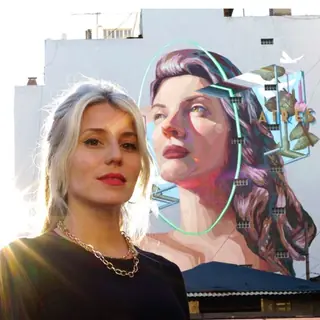
Marie AJRASNew York, NYArtist · 1 workMark FlemingPresident, Owner Actions, IncSpeaker · 1 sessionMark GagasCOO/Co-Founder, Sensory RoboticsSpeaker · 3 sessionsMark VoytekCEO Voytechnology Partners & Founding Partner Next Stage Trajectory, www.VoytechnologyPartners.comSpeaker · 1 sessionMary LeonardIndependent Film CuratorCurator · 2 eventsMary Mason BoazCEO & Founder, Mary Mason Boaz Coaching and ConsultingSpeaker · 1 sessionMary TigheFounder and Marketing Strategist, Mary Does MarketingSpeaker · 1 sessionMason ClutterPartner, FBT GibbonsSpeaker · 1 sessionMatine YukselCo-Founder & COO, Beltways, Inc.Speaker · 1 sessionMatt BradyManaging Director, Redhawk VenturesSpeaker · 1 sessionMatthew RobbenCTO & Co-Founder, Serif HealthSpeaker · 1 sessionMax DworinVice President, Cintrifuse CapitalSpeaker · 3 sessions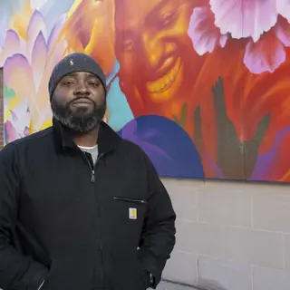
Max SansingChicago, Illinois United StatesArtist · 1 workMEDIANERASBarcelonaArtist · 1 workMegan DollenmeyerManaging Associate Attorney, FBT Gibbons LLPSpeaker · 1 sessionMegyn NorbutCo-Founder & Producing Director (Cincinnati Art Week); Founder, No Standing, No StandingFounder · OrganizerMelissa SmithCEO, Clareo BiosciencesSpeaker · 1 sessionMelissa VogleyRegistrarCurator · 1 event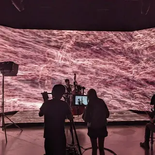
Miami UniversityOxford, OHArtist · 1 workMichael CarricoLEARNING & DEVELOPMENT, 84.51°Speaker · 1 sessionMichael GoodsonDirectorCurator · 2 eventsMichelle MurciaFounder + CEO, Book+StreetSpeaker · 1 session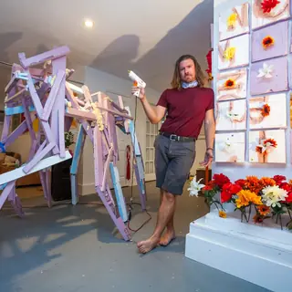
Mike StasnyAtlanta, GAArtist · 1 workMike VenerableDirector of Healthcare & Life Sciences, The O.H.I.O FundSpeaker · 1 sessionMike ZelkindFounder, CEO | Chairman | Board Member | VC & PE AdvisorSpeaker · 1 session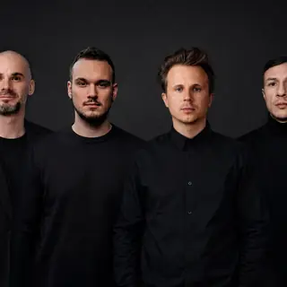
Mindscape StudioRomaniaArtist · 1 workMitko KarshovskiDirector of Community Engagement / Founder, Blue North / Cincy ScoopSpeaker · 1 session Mz. IcarNew York, NYArtist · 2 works
Mz. IcarNew York, NYArtist · 2 works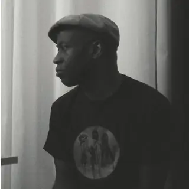
Napoleon MaddoxCincinnati, OHArtist Nathaniel M. SteinCurator of Photography at the Cincinnati Art MuseumSpeaker · Curator · 4 events
Nathaniel M. SteinCurator of Photography at the Cincinnati Art MuseumSpeaker · Curator · 4 events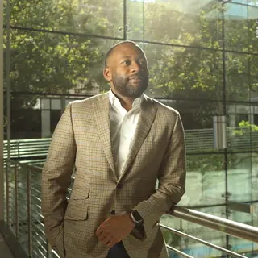
Nicholas ArcherVice President, Cincinnati Children'sSpeaker · 1 session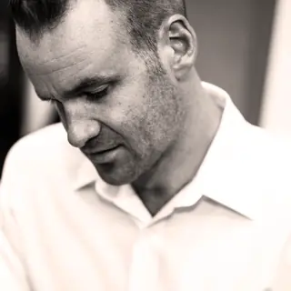
Nick CramerFounder and principal, Cramer OfficeSpeaker · 1 sessionNicola BenedettiviolinPerformer · 1 eventNorlynn StoryAssistant Vice President- Business Access Advisor, U.S. BankSpeaker · 2 sessionsNorthern Kentucky University Art StudentsErlanger, KYArtist Oliver BarrettSpeaker · Artist · 2 events
Oliver BarrettSpeaker · Artist · 2 events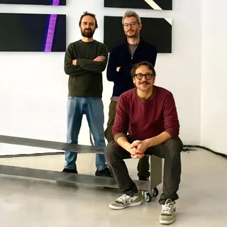
Onda StudioItalyArtist · 1 workOsamu James NakagawaRuth N. Halls Distinguished Professor at Indiana UniversitySpeaker · Artist · 2 eventsPaper AcornCincinnati, OHArtist · 1 workParker HeylEnglandArtist · 1 work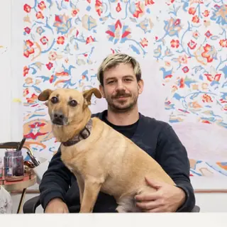
PastelArgentinaArtist · 1 workPatrick BrownDirector of Commercialization, University of CincinnatiSpeaker · 1 sessionPatrick LongoPresident / CEO, Alloy Development Co., Inc.Speaker · 1 session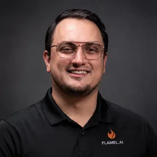
Paul EhlingerFounder/CEO, FlamelSpeaker · 1 sessionPaul JacksonSVP Strategic Programs, Entrepreneurs' CenterSpeaker · 1 session Paul Mpagi SepuyaArtist and ProfessorSpeaker · Artist · 5 eventsPete MillspaughSoftware Engineer & Writer, Val TownSpeaker · 1 sessionPeter DoeblerKettering Curator of Asian ArtCurator · 1 eventPeter SchmidtPrincipal, Refinery VenturesSpeaker · 1 session
Paul Mpagi SepuyaArtist and ProfessorSpeaker · Artist · 5 eventsPete MillspaughSoftware Engineer & Writer, Val TownSpeaker · 1 sessionPeter DoeblerKettering Curator of Asian ArtCurator · 1 eventPeter SchmidtPrincipal, Refinery VenturesSpeaker · 1 session Phillip MaiselArtistSpeaker · Artist · 3 events
Phillip MaiselArtistSpeaker · Artist · 3 events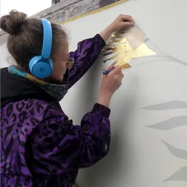
Polina SoloveichikBerlinArtist · 1 workRachel DesRochersFounder, CEO, The Gratitude CollectiveSpeaker · 1 sessionRadius ConceptsCincinnati, OHArtist · 1 workRahul DesaiCOO, Affinity Travel Co.Speaker · 1 sessionRaye GriffinCurator · 1 eventRed WorshipCOME WORSHIP! TourPerformer · 1 eventRiver Lotus Lion DanceLouisville, KentuckyPerformer · 1 event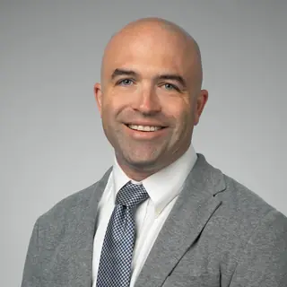
Rob SummerfordDirector, Forvis MazarsSpeaker · 1 sessionRobert MullenixPast Chair of OCAC Art Exhibitions CommitteeCurator · 1 eventRobin TrowerGuitaristPerformer · 1 event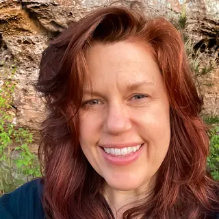
Robyn MoorePhotomedia-based ArtistSpeaker · Artist · 2 eventsRolando ArchilaFounder, SLIDEASSpeaker · 1 sessionRyan VaughanPartner, Forvis MazarsSpeaker · 1 sessionSaad GhosnFounder and President at SOS ArtCurator · 1 eventSandy EichertResident CuratorCurator · 1 eventSarah DowlinFounder &Creative Director, WorkLife StudiosSpeaker · 1 sessionSarah NazzalForesight Researcher, The Foresight Lab, University of CincinnatiSpeaker · 1 session Sarah SchmidtSunshine MallSpeaker · Artist · 2 eventsSarah Templeton WilsonExecutive DirectorCurator · 1 eventSchool for Creative and Performing ArtsCincinnati, OHArtistScott EdsallFood Innovation Incubator Manager, Findlay KitchenSpeaker · 1 session
Sarah SchmidtSunshine MallSpeaker · Artist · 2 eventsSarah Templeton WilsonExecutive DirectorCurator · 1 eventSchool for Creative and Performing ArtsCincinnati, OHArtistScott EdsallFood Innovation Incubator Manager, Findlay KitchenSpeaker · 1 session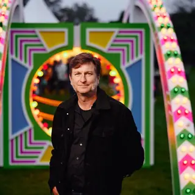
Scott PenningtonBaltimore, MDArtist · 1 workSean Van PraagCincinnati, OH United StatesArtist · 1 work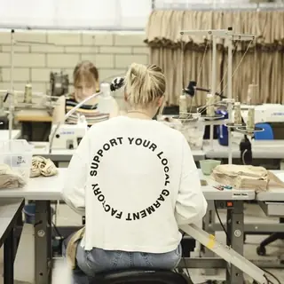
Sew ValleyCincinnatiArtist · 1 workShahryar QureshiFounder, QURE Industries, IncSpeaker · 1 sessionShahzia SikanderNew York, NYArtistSharon HuizingaFaculty advisor; CCM Associate Professor of Lighting Design and Technology, University of Cincinnati College-Conservatory of Music (CCM)Artist · 1 workShelby SinclairAssistant Professor of African and African American Studies and History at the University of VirginiaSpeaker · 1 eventSierra HaydenFounder | CEO, We OutsideSpeaker · 2 sessions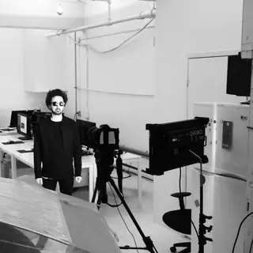
Silent Partners StudioMontrealArtist · 1 workSimion CollinsFilm Director, Riversky Films, LLCSpeaker · 1 sessionSmash StudioSwedenArtist · 1 workSoflesAustraliaArtist · 1 workSpencer SterlingCaliforniaArtist · 1 workSso-Rha KangCurator at The CarnegieCurator · 1 eventStefan ChinovProfessor, School of Fine and Performing ArtsCurator · 1 eventStephanie JenkinsVice President, Strategic Planning and Operations, KrogerSpeaker · 1 sessionStephanie von OhainFounder, Ascension Analytics Consulting LLCSpeaker · 1 sessionStrangeloopLos Angeles, CAArtist · 1 workStructuralsSwitzerlandArtist · 1 workSue Bevan BaggottFounder & President, Power Within ConsultingSpeaker · 3 sessionsSusan KostiSydney, New South Wales AustraliaArtist · 1 workTab BenoitBlues guitarist, Soul of the Swamp TourPerformer · 1 event Take a Moment StudioCincinnati, OHSpeaker · Artist · 2 eventsTaleal RobinsonCurator · 1 eventTammie ScottFounder, RiffPaySpeaker · 1 sessionTassie Katherine HirschfeldProfessor in the Department of Anthropology at the University of OklahomaCurator · 1 eventTerrianCOME WORSHIP! TourPerformer · 1 eventThe Great Paper MassacreItalyArtist · 1 workThe University of Cincinnati College-Conservatory of Music – Lighting Design & TechnologyCincinnati, OHArtist · 1 work
Take a Moment StudioCincinnati, OHSpeaker · Artist · 2 eventsTaleal RobinsonCurator · 1 eventTammie ScottFounder, RiffPaySpeaker · 1 sessionTassie Katherine HirschfeldProfessor in the Department of Anthropology at the University of OklahomaCurator · 1 eventTerrianCOME WORSHIP! TourPerformer · 1 eventThe Great Paper MassacreItalyArtist · 1 workThe University of Cincinnati College-Conservatory of Music – Lighting Design & TechnologyCincinnati, OHArtist · 1 work Theresa BembnisterIndependent CuratorSpeaker · Curator · 2 eventsTheresa Leininger-MillerProfessor of Art History at the University of CincinnatiCurator · 2 eventsThis is LoopTaunton, Mainland UK United KingdomArtist · 1 workTian PhilsonFounder, Leadership Transformation Coach, LSF WellnessSpeaker · 1 session
Theresa BembnisterIndependent CuratorSpeaker · Curator · 2 eventsTheresa Leininger-MillerProfessor of Art History at the University of CincinnatiCurator · 2 eventsThis is LoopTaunton, Mainland UK United KingdomArtist · 1 workTian PhilsonFounder, Leadership Transformation Coach, LSF WellnessSpeaker · 1 session Tiffany CooperCommunity Impact Advisor (Creative Collaborator), Meaningful ConnectionsOrganizerTim HoriCEO, Horizen Medical LLCSpeaker · 1 sessionTim MetznerFounding Partner, FireroadSpeaker · 1 sessionTim RietenbachFaculty Director of ExhibitionsCurator · 1 eventTim SchigelManaging Partner, Refinery VenturesSpeaker · 1 sessionTom WalkerDirector of Industrial Design, VP, Partner, Mertz DesignSpeaker · 1 sessionTorrey BabsonSenior Manager, Innovation Services, BRITE Energy InnovatorsSpeaker · 2 sessionsTracy Longley-CookAssociate Professor of Art, School of Fine and Performing ArtsCurator · 2 events
Tiffany CooperCommunity Impact Advisor (Creative Collaborator), Meaningful ConnectionsOrganizerTim HoriCEO, Horizen Medical LLCSpeaker · 1 sessionTim MetznerFounding Partner, FireroadSpeaker · 1 sessionTim RietenbachFaculty Director of ExhibitionsCurator · 1 eventTim SchigelManaging Partner, Refinery VenturesSpeaker · 1 sessionTom WalkerDirector of Industrial Design, VP, Partner, Mertz DesignSpeaker · 1 sessionTorrey BabsonSenior Manager, Innovation Services, BRITE Energy InnovatorsSpeaker · 2 sessionsTracy Longley-CookAssociate Professor of Art, School of Fine and Performing ArtsCurator · 2 events Trevor PaglenArtistSpeaker · Artist · 4 eventsTruly Design CrewItalyArtist
Trevor PaglenArtistSpeaker · Artist · 4 eventsTruly Design CrewItalyArtist Valerie JacobsFounder & CEO, Valerie Jacobs FuturesSpeaker · 1 sessionVamos AnimationGermanyArtist · 1 workVIGASBrazilArtist · 1 workVince FraserLondon, LONDON United KingdomArtist · 1 workVirginia VolleArts Program AdministratorCurator · 1 eventWayne HorseAmsterdamArtist · 1 workWilliam Butler-CroutwaterManaging Partner, Bearcat VenturesSpeaker · 1 sessionWilliam Menefieldjazz pianist, 2002 (former Duncanson Artist-in-Residence)Performer · 1 eventWilliam MesserIndependent CuratorCurator · Artist · 2 eventsWilliam ThomasCo-Founder & Partnerships Director (Cincinnati Art Week); Co-Founder & Principal, Cincy Nice, Cincy NiceFounder · OrganizerWynton MarsalisPerformer · 2 eventsXavier University Art DepartmentCincinnati, OHArtist · 1 workZac StroblDirector, NKU Center for Innovation and EntrepreneurshipSpeaker · 1 sessionZach BahorikVenture Partner, FBT GibbonsSpeaker · 1 sessionZachary HensleySVP, Product & Operations, FRAYTSpeaker · 1 session
Valerie JacobsFounder & CEO, Valerie Jacobs FuturesSpeaker · 1 sessionVamos AnimationGermanyArtist · 1 workVIGASBrazilArtist · 1 workVince FraserLondon, LONDON United KingdomArtist · 1 workVirginia VolleArts Program AdministratorCurator · 1 eventWayne HorseAmsterdamArtist · 1 workWilliam Butler-CroutwaterManaging Partner, Bearcat VenturesSpeaker · 1 sessionWilliam Menefieldjazz pianist, 2002 (former Duncanson Artist-in-Residence)Performer · 1 eventWilliam MesserIndependent CuratorCurator · Artist · 2 eventsWilliam ThomasCo-Founder & Partnerships Director (Cincinnati Art Week); Co-Founder & Principal, Cincy Nice, Cincy NiceFounder · OrganizerWynton MarsalisPerformer · 2 eventsXavier University Art DepartmentCincinnati, OHArtist · 1 workZac StroblDirector, NKU Center for Innovation and EntrepreneurshipSpeaker · 1 sessionZach BahorikVenture Partner, FBT GibbonsSpeaker · 1 sessionZachary HensleySVP, Product & Operations, FRAYTSpeaker · 1 sessionNo one matches these filters
Try a shorter search, or clear a filter.
Names, titles and bios are as each program publishes them; 242 of 373 have a published headshot. Each page names its source.